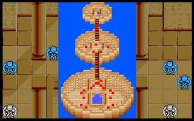

第十四章 神秘之塔

 雷特
雷特 米兰
米兰 克隆
克隆 艾利欧
艾利欧 巴拉多
巴拉多 洛加
洛加 希瓦那
希瓦那 卡里斯
卡里斯 莱特
莱特 凯亚
凯亚 莉娜
莉娜 索尼克红武圣蓝武圣
索尼克红武圣蓝武圣
LV15 武者 黑武圣(NPC) （HP1000,AP480,DP340,HIT210,EV95,MV4）
本关敌人：
LV20 达克妮丝 （HP5000,AP500,DP200,HIT160,EV60,MV6,灭魂碎,爆龙炎）
LV15 大恶魔x4 （HP640,AP290,DP170,HIT125,EV45,MV5,烈击弹）
 LV10 恶魔x12 （HP400,AP240,DP80,HIT100,EV20,MV5,火流星）
LV10 恶魔x12 （HP400,AP240,DP80,HIT100,EV20,MV5,火流星）
 LV12 魔战士x4 （HP720,AP280,DP154,HIT133,EV38,MV3）
LV12 魔战士x4 （HP720,AP280,DP154,HIT133,EV38,MV3）
LV12 高段僧侣x3 （HP360,AP128,DP171,HIT106,EV46,MV3,圣光弹,灵疗术）
胜利条件：敌人全灭
失败条件：雷特或黑武圣死亡
战后加入：
LV10 武者 黑武圣 （HP1000,AP400,DP170,HIT220,EV105,MV4,圣剑,神圣胸铠）
战后报酬：
$9600G/$28800G
攻略简要：
本关也是相当麻烦的一关。传送点出口不远的僧侣，圣光弹可以打到大半的人，所以列为优先处理对象。必须以三个骑兵加上克隆和洛加，解决挡路的两只恶魔和高段僧侣，否则便必须挨一记圣光弹。建议是克隆与希瓦那杀上面那只，莱特和洛加杀右边那只，然后让巴拉多一击杀掉僧侣。接着索尼克、米兰与莉娜解决左边的大恶魔，雷特则往上去分散攻击，其他人往上一些，聚集在出口处，只留下蓝武圣。第二回合开始优先解决恶魔，剩下的就简单了。黑武圣和达克妮丝相安无事，不必管他（如果用无限攻击距离密技去攻击达克妮丝，那么她便会开始前去攻击黑武圣）。
战后商店道具:
武器： |
防具： |
道具： |
剧情对话：
黑武圣:...你就是现任的魔族首领达克妮丝?你特地率领魔族大军到这个地方,可是想趁机将我除掉?
达克妮丝:哼哼,你说的没错!只要一天不除掉你们这几个老不死的,将来就可能会妨碍我们的计划!
黑武圣:计划...这么看来,我所担心的事情是正确的了.
达克妮丝:嘿嘿嘿...就算你已经知道我们的计划,将死的人又能做什么?
红武圣:话别说得太早!谁会死还不晓得哩?
达克妮丝:啊!是你们...看来迪斯已经失败了...算了,就让我将你们一并解决,也省得往后的麻烦!
艾利欧:魔族的首领...是个漂亮的年轻女子?
黑武圣:别被她的外表所迷惑了,她能运用变形的能力,任意变化自己的外貌,使敌人因大意而惨遭毒手!
达克妮丝:哼!你这几个老不死的,还不是用了变形的能力来掩饰真面目?
雷特:看来这魔族首领和三武圣是早就相互了解对方的底细了...
红武圣:别发呆了,我们先过去帮忙黑武圣吧!
达克妮丝:没那么容易!孩子们出来!把他们全给我杀了!
打败达克妮丝,战斗结束。
达克妮丝:这几个老家伙,竟然还找了些人类当帮手!...好!就算是你们目前暂时赢了,但是只要吾王大邪神一复活,你们就死定了!等着瞧吧!
米兰:这个女妖用传送术跑了!
蓝武圣:别追了,你们还不是她的对手..看来我们的猜测没错...
红武圣:嗯!果然魔族的意图,是想要被封印的大邪神再度复活于世!
雷特:大邪神?不就是上古所传说中的大魔王?
黑武圣:没错.魔族之所以甘于和人类签下契约,并隐忍了这么多年,只怕就是为了这个目的.看来这下可麻烦了...
米兰:大邪神真的有如此厉害吗?
蓝武圣:事到如今我就把一切的情形告诉你们吧!原本我们和魔族,都是从另一个世界来的住民.由于双方存有极大的差异所以多年来一直征战不止.为了停止这场战争,我们这一族决定派出十二个精英战士,刺杀对方的首领--大邪神.
米兰:那你们就是传说中圣族了...后来呢?
蓝武圣:经过一番极惨烈的血战后,我们终于成功地打倒了大邪神,但也牺牲了其它同伴.不过这只是暂时的胜利罢了...由于大邪神是不死之身,为了预防他再度复活,我们只好将他封印在另一个时空,也就是现在这个达拉尼亚岛的亚姆山上.
米兰:大邪神就封印在亚姆山上?
蓝武圣:为了预防残存的魔族前来破解封印,我们在此建立了神秘之塔,以监视封印.由于封印的力量极强,所以一般魔族也不可能解除得了...原本以为从此太平,没想到过了许久,你们人类从其它的大陆上纷纷迁移到这个岛上来定居,而使得事情有了变化...
索尼克:难道...因为我们人类,而使得封印产生了异变?
蓝武圣:所谓的封印,并不只是一个单纯的图腾或魔法力,而是一个具有自我意识,而且外形与人类相同的生命体.当他发现人类的存在时,就想要进入人类的社会中成为一个真正的人类.
米兰:有这种事!真是不可思议...
蓝武圣:为此我们伤透了脑筋,因为只要封印变成的『人』一旦死亡,封印就会自然解除.所以我们为了保护他在人类社会中能安然无恙就依照你们人类中所流传的神话,变成传说中的三武圣,以较近似人类的形态保护他.
雷特:...!传说中我的先祖身旁有三武圣所庇佑...难道...我们王族就是你们所说的封印所幻化成的人类之后裔?这...
红武圣:我知道你和其它人都很难接受这个事实,不过这是实情...
蓝武圣:虽然封印变成了人类,但是『他』的封印力量依旧存在,而且在他取妻生子后,虽然已经不能成为永久的存在,但是却能接着传宗接代的方式,将封印的力量及本质传到下一代的身上.
黑武圣:原本我们想要设法阻止『他』的,但是面对这种意外的变化我们除了惊叹之外,也只好顺其自然了.
蓝武圣:但是魔族知道这件事情以后,便开始大举侵扰人类.表面上是单纯的种族纠纷但实际上是以这个为幌子想要消灭封印一族的后裔,我们力量虽然胜过一般魔族,但是也不能一直这样下去最后我们想到了一个解决的办法.
艾利欧:是什么办法呢?
蓝武圣:我们决定由人类自己来保护他.也就是说,我们先设法让他变成人类的首领,建立一个足以保护他的武力及组织.
索尼克:那...原来这就是罗特帝亚王国真正的由来...
红武圣:魔族在无法得手之下,便一直等待机会,直到十几年前...
克隆:啊!莫非哈奇与魔族勾结叛乱就是因为所谓的机会来临之故?
蓝武圣:原本封印之力皆为一子单传,没想到雷特这一代,竟然出现了双胞胎.根据我们的推测,这是封印的力量已经一分为二,分在雷伊及雷特的身上.但是在他们十八岁之前,封印的力量尚未稳定.也就是说,只要在这之前,他们当中有一个被消灭的话,封印之力便会完全转移到另外一个的身上.
黑武圣:魔族之所以和哈奇勾结叛乱,就是想在叛乱中,趁机除去他们两个.没想到雷特已经被救走,只发现雷伊.魔族为了防止得手的封印之力再度失去,只好先留下雷伊,等到他十八岁之后,体内的封印已经稳定之后,再予以出去.如果封印的力量只剩下一半,那其余的力量也就无法再封印住大邪神了.
雷特:那...那我大哥现在岂不是已经遭到毒手了?
红武圣:恐怕是如此...我们一直想要救他出来,但是却无法侦测到他的下落.想必是达克妮丝用她的妖力,阻碍了我们的搜寻.原本我们担心你也会遭到毒手,幸好后来在利达村发现了你.所以我们便在暗中保护你并以法力阻碍魔族的探寻.
黑武圣:在这段期间我们遇到了隐居在潘达拉山上的索尼克.在知道他曾是你父亲生前的好友,并也愿意在未来之时保护你后,我们便传授他各种知识,以其将来有朝一日能够保护你.为避免泄漏太多,我们并没有告诉他完全的事实.
雷特:这...我实在一时之间无法接受这个事实...
米兰:雷特大哥,不论怎样,我会永远支持你的.
蓝武圣:目前眼前最重要的事,便是阻止大邪神复活.达克妮丝这次之所以率军来袭,便是想要除去我们,以避免我们阻止其目的.若不赶紧阻止的话,只怕大邪神一旦复活,不止这个岛上的人类都会被灭亡,只怕连其它地区的生物都会遭到空前的浩劫!
雷特:...我们的确应该以大局为重.那我们现在该如何呢?
黑武圣:为了避免封印本质一被消灭,会使封印失去作用,所以我们在王城建设之初便在王城下另外设了辅助用的力量场装置...照你们的说法,应该算是魔法阵.当封印被毁之后,这装置会立刻发生作用而暂时阻止大邪神复活.
蓝武圣:如今装置已发动,而达克妮丝也应该会感受到这个力量场装置的存在,而会赶去将它毁去.所以我们得先赶到王城去趁她尚未得手前加以破除.
雷特:好!那我们就赶快到格菲迪城吧!
第十四章完